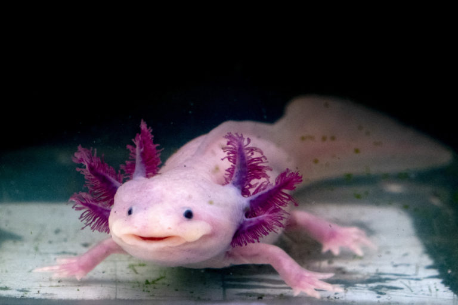

Cuidemos nuestros océanos para el futuro del planeta
Los ecosistemas marinos como arrecifes de coral, manglares y mar abierto son el hogar de miles de especies. Su equilibrio es vital para la vida en la Tierra.
Muchas especies marinas están amenazadas por la contaminación, la pesca excesiva y el cambio climático. Entre ellas, tortugas marinas, tiburones y corales.
Reducir el uso de plásticos, apoyar leyes de conservación, y participar en limpiezas de playas son algunas formas de ayudar. Cada acción cuenta.
Existen organizaciones dedicadas a la conservación marina que promueven campañas, investigaciones y educación ambiental. Apoyarlas es una forma directa de contribuir.